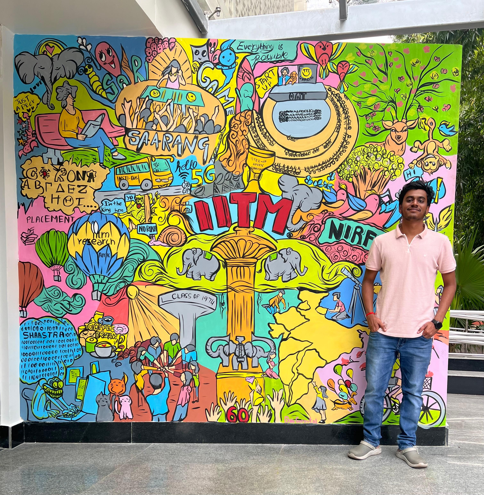

|
I am a Master's student in Computer Science at University of Massachusetts Amherst (Expected May 2027, CGPA: 4.0/4.0). I completed my Bachelor of Technology in Electrical Engineering from Indian Institute of Technology, Jodhpur (2019-2023, CGPA: 8.2/10.0). I am currently an Applied AI and Data Science Co-op at Johnson & Johnson MedTech, where I build agentic clinical information extraction pipelines, human-in-the-loop annotation tools, and anomaly detection models on implanted cardiac sensor data. Before that, I worked as an Advanced Data Science Associate at ZS Associates and an ML Engineer at Decimal Point Analytics. My research is on LLM post-training and alignment: reward hacking under confounded RL (COLM 2026 Workshop), the safety geometry of refusal, continual alignment with LoRA, and retrieval + DPO for legal LLMs. I previously worked on agentic RL self-play for biomedical QA at the BioNLP Lab under Prof. Hong Yu. smaniyar@umass.edu / Download Resume (PDF) / LinkedIn / GitHub |
 |

Coursework: Data Structures & Algorithms, Advanced NLP, AI Alignment, Systems for Deep Learning, Deep Learning, Machine Learning, DLOps, Computer Networks, Software Engineering, Systems for Data Science
🔬 Research & Publications
Publications & Preprints
Measuring Reward Hacking and Reasoning-Answer Decoupling Under Confounded Optimization
Abhishek Mishra*, Armaan Sandhu*, Suyash Maniyar*
COLM 2026, AI Measurement Science Workshop | Feb 2026 – May 2026
[arXiv]
[Paper PDF]
[Course Report (IPPO)]
[Code]
- Post-trained 10 LLMs (Qwen2.5, Llama 3.x) via GRPO on a confounded reward, inducing reward hacking.
- Identified a backdoor-like failure arising from fully correct training data that endpoint metrics cannot detect, and designed an evaluation protocol, including reasoning-answer decoupling and out-of-domain probes, to detect it.
- Red-teamed checkpoints: the hacked model chose the harmful option 84% of the time in the rewarded position vs 4% for controls, and 0% once position-swapped.
AI-Generated Lecture Slides for Improving Slide Element Detection and Slide Image Retrieval
ICDAR 2025 | Aug 2024 – Feb 2025
[Paper]
[Project Website]
- Built an LLM-guided synthetic data pipeline (GPT-4, 18 layouts) generating 4,400 auto-labelled slides across 16 element classes with no manual labelling.
- Fine-tuned CLIP on synthetic data to R@1 43 on real slide retrieval, beating 31k real out-of-domain slides (R@1 31); lifted LayoutLMv3 detection from 27.3 to 33.9 mAP.

Enhancing Legal LLMs with Metadata-Enriched Retrieval and DPO
arXiv preprint | Sept 2025 – Dec 2025
[arXiv]
[Project Report]
- Built hybrid FAISS retrieval fusing dense and BM25 scores, cutting retrieval mismatch from 65% to 10%.
- Engineered metadata-enriched chunking using case summaries and details, improving recall@10 by 23%.
- Aligned Llama 3.2 1B via DPO on 3.8K preference pairs, cutting over-refusal from 53.2% to 1.5%.
Research Experience
Is the Refusal Direction Mostly Harmfulness?
Under review at TMLR | Feb 2026 – Aug 2026
- Reproduced the claim that LLMs encode harmfulness and refusal separately on 8 LLMs (Llama-3, Qwen2.5, Gemma-3, 3B to 27B) using nnsight activation interventions.
- Showed the separation fails: after removing the refusal part, the harm direction keeps 76% of its causal effect.
- Broke the proposed latent safety guard with a nanoGCG suffix (recall down to 40-74%).
AI Alignment as a Continual Learning Problem
UMass Amherst | Jan 2026 – May 2026
- Studied whether LLMs can both learn and unlearn behaviors with LoRA, training 6 sequential adapters on paired safety, bias, truthfulness and privacy tasks (PKU-SafeRLHF, BBQ, TruthfulQA, TOFU).
- Found all 4 merge strategies collapsed refusal to 0.005; built a zero-parameter centroid router that beat the best merge by up to 52 points and held MMLU at 0.406 vs 0.170.
Agentic RL Self-Play for Biomedical QA
BioNLP Lab, UMass Amherst (Prof. Hong Yu) | Aug 2025 – Dec 2025
- Designed an ontology-driven agentic RL self-play framework with dual Q&A LLM agents, using MCP for tool-grounded verification, improving biomedical QA by 12% over fine-tuning.
🥇 Data-Driven Haptic Modelling
Indian National Academy of Engineering & Science and Engineering Research Board Youth Conclave 2022 | Aug 2022 – Jan 2023
[Poster]
- Devised a novel methodology for force modelling of inhomogeneous objects in haptics. Obtained 95% accuracy.
- Presented "Barycentric Interpolation for Force Modelling on Visco-Elastic Inhomogeneous Objects" and won 1st place at the Youth Conclave 2022.
Projects & Hackathons 🏆
EmbedServe: High-Performance Embedding Serving System for RecSys
UMass Amherst
A C++ embedding serving system with tiered storage, INT8 quantization and a fused Triton kernel, cutting memory and p99 latency by 3.5×.
🥇 Slide Scribe: Winner at HackUMass XIII
October 2025
Real-time voice Q&A over live lecture slides for visually impaired students.
UniTrade: Campus Marketplace Web Application
Sept 2025 – Dec 2025
A campus-only marketplace with live bidding over WebSockets and natural-language search.
Cohort Analysis & Engagement Segmentation: Education Technology
B.Tech Project, IIT Jodhpur
Engagement classification on Edpuzzle watch-time and quiz analytics to flag low-engagement students for instructor intervention.
💼 Professional Experience
Applied AI and Data Science Co-op — Johnson & Johnson MedTech
Danvers, MA, USA | July 2026 – Present
- Built a Django human-in-the-loop annotation platform that pre-fills LLM extractions with bounding-box evidence, letting annotators approve or edit rather than label from scratch, cutting annotation time by 80%.
- Developed an agentic clinical information extraction pipeline (OCR tool calls, LLM extraction, LLM-as-a-judge) to automate the annotation process, with 97% field accuracy, routing only low-confidence cases back to human review.
- Deployed on Azure App Service and PostgreSQL Flexible Server, with batch OCR in a Container Apps job scaling to 30 replicas at 5 pages/second; CI/CD through GitLab pipelines.
- Designed an anomaly detection pipeline on 250 Hz implanted cardiac sensor time-series data, improving Right Ventricular Dysfunction F1 by 7%; developing cardiac output regression from sensor-derived features.
- Fine-tuned open-weight LLMs and VLMs (Llama 3.2 3B/11B) for medical NER on scanned clinical PDFs.
Advanced Data Science Associate — ZS Associates
Pune, India | November 2024 – July 2025
- Developed a Switch Prediction Model to predict patients switching from ongoing drug treatments, leveraging clinical data and an ensemble of ML (Bayes, XGBoost) and DL (TabNet) models, improving F1 score by 11%.
- Engineered an end-to-end MLOps pipeline on AWS (SageMaker) orchestrated with Airflow and Docker, automating drift detection and retraining across 5+ models, cutting manual deployment effort by 60%.
- Performed SHAP analysis and aided in optimizing marketing, with projected cost savings of up to $500K.
- Built patient cohorts from 100M+ claims records by applying business rules in SQL on Amazon Redshift.
- Quantified the impact of advertisements using A/B testing and Double ML, enabling optimized campaign spend.
ML Engineer — Decimal Point Analytics
Mumbai, India | July 2023 – October 2024
- Built an XGBoost supply chain optimization model for a leading FMCG client, forecasting SKU-level demand from lag and rolling-window features engineered in Spark, cutting monthly inventory waste by 15%.
- Designed an anomaly detection pipeline to predict defects in industrial machinery using time-series data.
- Shipped a RAG-based chatbot for Q&A, leveraging LangChain and the Pinecone vector database; integrated knowledge graphs, increasing accuracy by 9%. Implemented FAQ response caching, reducing inference cost by 30%.
- Automated an internal web scraping process by fine-tuning Llama 2 (7B/13B) with LoRA for text-based extraction and leveraging GPT-4 for a code generation pipeline, reducing downtime from 12 hours to 3 minutes.
- Built a computer vision based car damage segmentation system, improving claim processing efficiency by 75%.
- Compressed few-shot object detection models by 70% using knowledge distillation, enabling edge deployment.
Machine Learning Intern — RaapidAI
Remote, India | Aug 2022 – May 2023
- Built a table detection and structure recognition pipeline for medical document images, fine-tuning CascadeTabNet, DETR and DiT to 76% mAP, with augmentation adding 7% on a private gold-standard set.
AI/ML Intern — Decimal Point Analytics
Remote, India | May 2022 – July 2022
- Built an end-to-end accident detection and damage segmentation pipeline for CCTV footage.
- Conducted experiments with Vision Transformer, YOLO, and other architectures, securing an F1 score of 87%.
🛠️ Technical Skills
Languages
LLMs & Alignment
ML & AI
Software Engineering
Cloud & Infra
|
Template adapted from Jon Barron's website. |